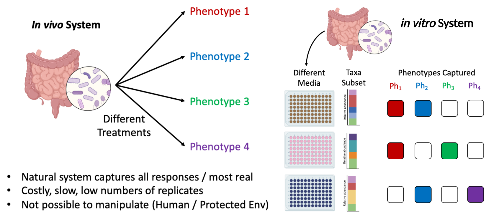
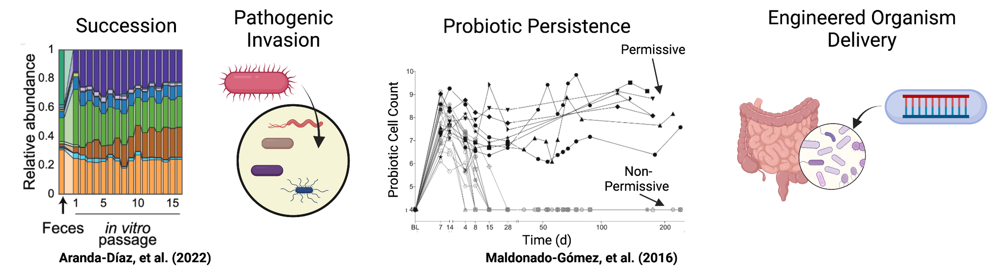

Human Microbiome
Overview
Human health is directly connected to the roughly 100 trillion microbes that live in our digestive tract (The Human Microbiome). A flurry of research on the human microbiome has revealed that microbes in our gut may directly impact a diverse range of human health issues from psychological conditions to cardiovascular disease. However, the microbial diversity present across even healthy adult human microbiomes is immense, still poorly characterized in some sub-populations, and is directly impacted by host-unique features such as age, diet, antibiotic usage, and underlying medical conditions. This high level of individualized diversity has hindered the establishment of cause-and-effect relationships between microbiome compositions and human health. Thus, several fundamental challenges and knowledge gaps remain in our ability to rapidly assess diverse populations and identify features (e.g. genes, pathways, microbes, and interactions) at sufficiently high levels of resolution to drive mechanistic insights including that:
- Experiments on human or animal subjects are complex and expensive leading to smaller sample sizes and underpowered statistics.
- Studies based on direct stool sampling are an indirect measure and often not reflective of true internal microbiome responses.
- Typical 16s rRNA amplicon-based stool sequencing studies do not capture features such as microbial metabolism, strains, or mobile elements (e.g. plasmids and phages), which may be the features driving health outcomes.
We hope to overcome these issues through the development and genome-resolved metagenomic characterization of in vitro human microbiome systems that are reflective of host microbiomes and recapitulate host phenotypic responses. As development of these systems is in the early stages, it is likely that additional modifications to growth conditions will result in in vitro communities that even more realistically capture phenotypes of their hosts. By using in vitro community cultivation we can explore an extremely wide set of growth conditions and experimental perturbations without the need for human or animal subjects.
Research Areas
Microbial Persistence: Persistence, the ability of a microorganism to enter or stably remain within a microbial community, is a basic and important property of microbiome dynamics. Understanding the underlying features (i.e., genes and metabolic pathways) controlling microbial persistence within microbiomes is relevant for both basic biological understanding and practical applications. This includes understanding the dynamics of microbial succession in communities, pathogenic invasion into communities, persistence of probiotic strains in human microbiomes, and enabling engineered organisms to persist in natural microbiomes.
In this project we are challenging stable in vitro human microbiomes with externally introduced probiotic strains (e.g. Lactobacillus sp.) as models to uncover the features (e.g. genes and metabolic pathways) impacting the persistence of an introduced strain into a stable system. Using the in vitro strategy will also allow a significant number of stable community growth conditions and probiotic strains to be tested on each unique human microbiome sample.
Approach
While our lab has several research areas of interest within the human (and other) microbiome space, our general approach to cultivation and feature identification across these systems is roughly congruent and follows a four-step strategy:
- Cultivate many biological and technical replicate microbiomes in parallel using high-throughput techniques and passage until a stable community composition is achieved.
- Apply an experimental perturbation to stable communities, sequence source and post-perturbation communities using shotgun metagenomic sequencing, and assemble microbial genomes and other genetic elements using genome-resolved metagenomic methods.
- Apply classical statistical analysis and machine learning methods to identify features (e.g. genes, metabolic pathways, organism compositions, ect.) within communities that are predictive of measured outcomes (e.g. persistence duration).
- Work with collaborators within BiomeForge to validate feature impacts on tested perturbation using targeted community editing methods.
Selected publications
-
Lou, Y. C., Olm, M. R., Diamond, S., Crits-Christoph, A.,
Firek, B. A., Baker, R., Morowitz, M. J., & Banfield, J. F.
(2021). Infant gut strain persistence is associated with
maternal origin, phylogeny, and traits including surface
adhesion and iron acquisition.
(https://doi.org/10.1016/j.xcrm.2021.100393)